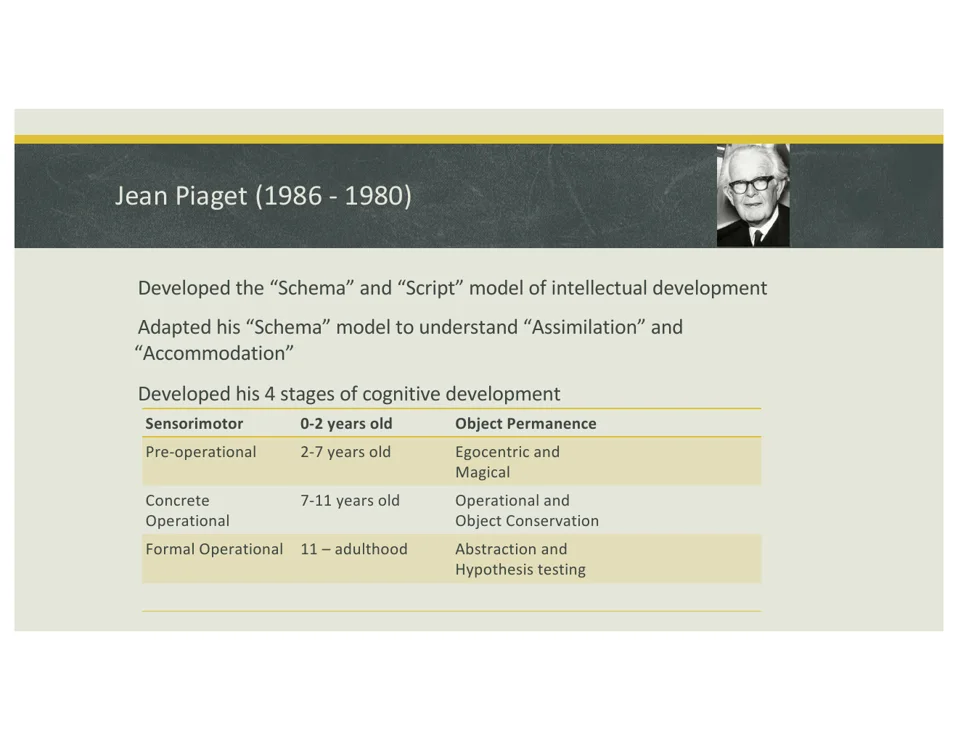
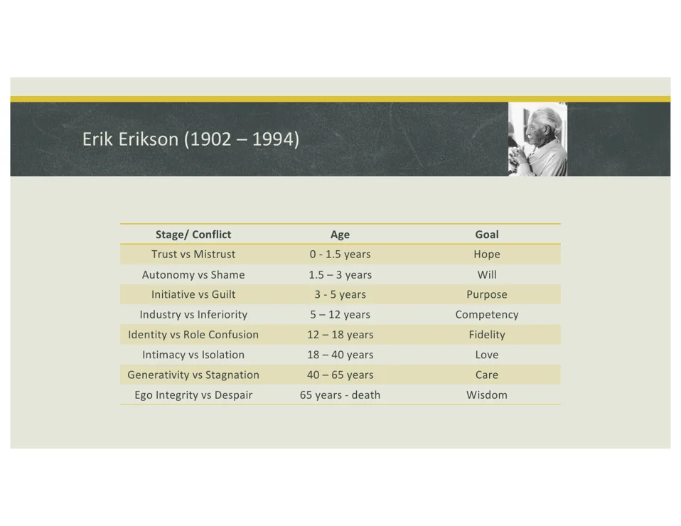
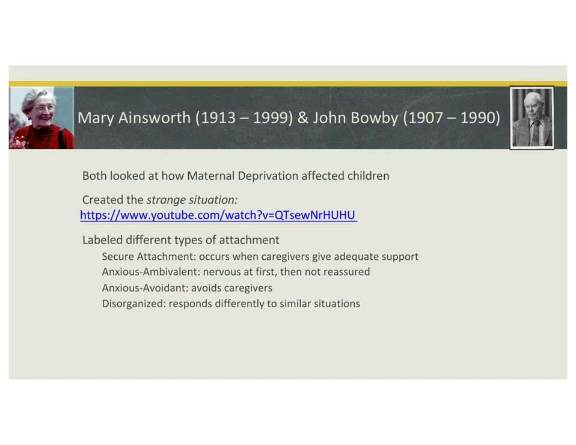
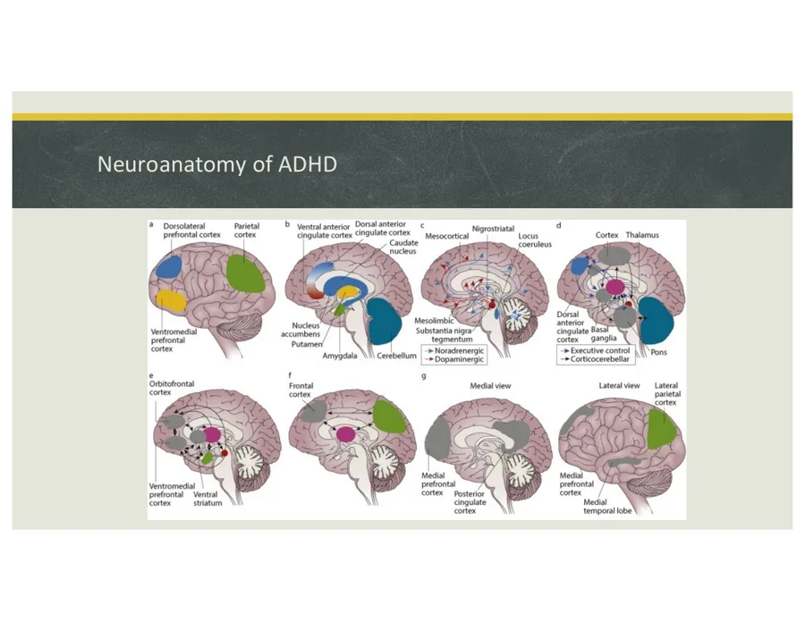
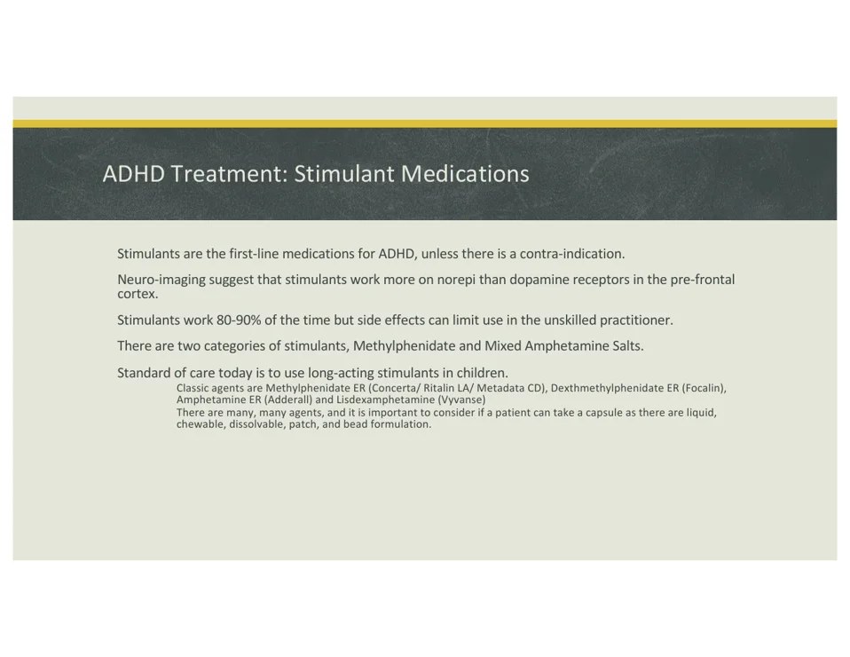
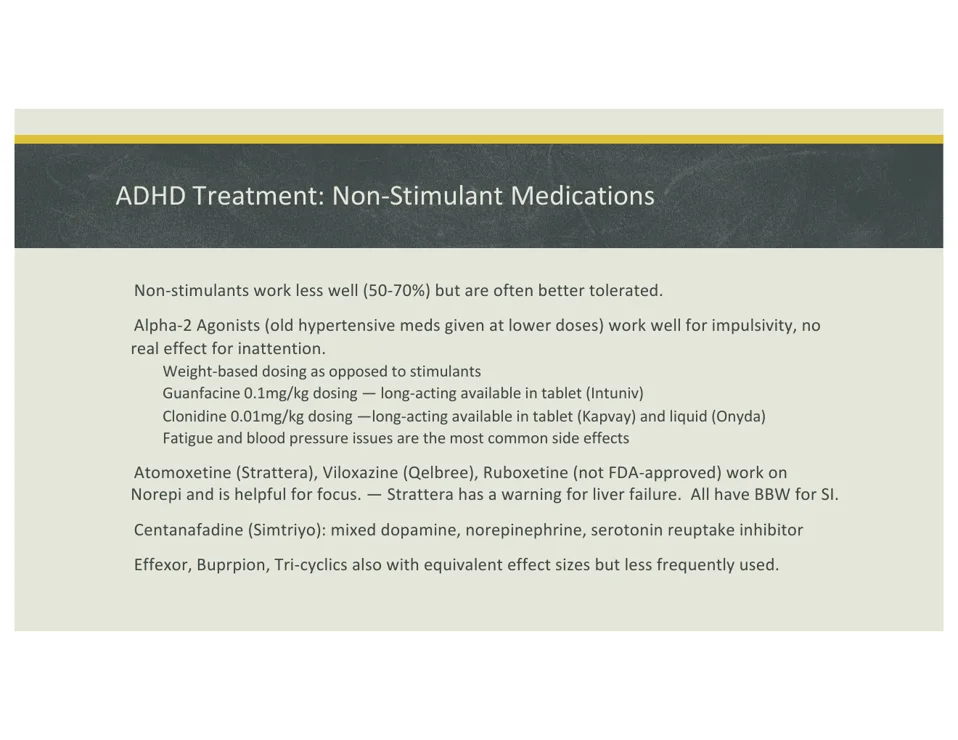
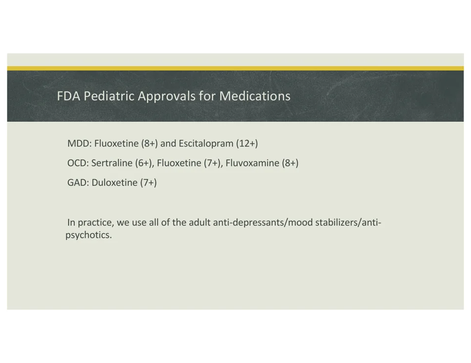

Section 01 - Child psychiatric interview
Use play as data, not decoration.
The first diagnostic instrument is the clinician's body in the room: tone, comfort with play, tolerance of silence, and attention to what the child does before they can explain it.
Kids are not small adults
Children have less verbal capacity, less comfort with strangers, and less understanding of the "medical game." Their behavior in the room may be more revealing than their answers.
Do what kids do
Shared activity lowers threat and creates opportunities to observe reciprocity, frustration tolerance, attention, motor control, imagination, and attachment behavior.
Ask across settings
Most pediatric psychiatric diagnoses require impairment in real-life functioning. For ADHD especially, symptoms must be present in at least two settings.
"Your body is your stethoscope" means the interview is embodied observation: how the child enters, separates, joins play, uses language, tolerates limits, and recovers from frustration.
Birthday opener: a small question with a lot of signal
A birthday question can test language, orientation, memory, social reciprocity, family dynamics, anticipation, and whether the child treats the clinician as safe. The content is simple; the process is the exam.
Section 02 - Developmental theories
Know the thinker by the clue.
These theories are less about memorizing biographies and more about recognizing the vocabulary that exam writers use.



| Thinker | Signature idea | Board-style clue |
|---|---|---|
| Freud | Psychosexual development: oral, anal, phallic, latency, genital. | Little Hans; fixation; oral/anal/phalic age clues. |
| Piaget | Schemas, assimilation/accommodation, cognitive stages. | Object permanence = sensorimotor; egocentric/magical = preoperational; conservation = concrete operational; abstract hypotheses = formal operational. |
| Vygotsky | Social development and zone of proximal development. | Scaffolding from adults/peers and culture-specific learning. |
| Klein | Object relations; early relationships shape later behavior. | Mother/breast as first object or part-object. |
| Winnicott | Holding environment, good-enough mother, play. | Scribble game, spatula game, "good enough" caregiving. |
| Erikson | Psychosocial conflicts across the lifespan. | Trust, autonomy, initiative, industry, identity, intimacy, generativity, integrity. |
| Mahler | Separation-individuation from caregiver. | Hatching, practicing, rapprochement; child explores while using mother as reference point. |
| Ainsworth/Bowlby | Attachment and maternal deprivation. | Strange Situation; secure, anxious-ambivalent, anxious-avoidant, disorganized. |
AnKing reinforcement: egocentrism maps to the preoperational stage, understanding death as permanent is concrete operational, and abstract reasoning is formal operational.
Section 03 - Intellectual disability and autism spectrum disorder
Developmental deficits require function, onset, and support needs.
The lecture presents ID and ASD as clinical diagnoses that need careful assessment, screening tools, family support, and school/environmental planning.
Vignette #1 - friendly 8-year-old with dysmorphias, heart surgery, Synthroid
Think intellectual disability with a medical/genetic or endocrine clue. The AnKing deck adds a board association: congenital/perinatal hypothyroidism can cause irreversible intellectual disability if not treated, which is why neonatal screening and thyroid replacement matter.
Intellectual disability
DSM frame: deficits in intellectual functions, deficits in adaptive functioning, and onset during the developmental period.
Severity is support-based
Lecture IQ anchors: mild 50-69, moderate 36-59, severe 20-35, profound less than 20. AnKing uses nearby board cutoffs of mild 55-70, moderate 40-55, severe 25-40.
ID treatment
Early school placement, parent education/support, and targeted medications only for self-injury or violent outbursts when needed.
| ASD domain | Core criteria | Clinical clues | Tests/treatment |
|---|---|---|---|
| Social communication | Persistent deficits in reciprocity, nonverbal communication, and relationships. | Poor eye contact, limited back-and-forth conversation, reduced sharing of interests, difficulty with peers. | Screen with M-CHAT-R/F, ESAT, ITC, POSI, SCQ; ADOS is gold-standard formal evaluation but not required for clinical diagnosis. |
| Restricted/repetitive behavior | At least two: stereotyped movements/speech, sameness/rituals, fixated interests, sensory hyper- or hyporeactivity. | Maps/geography fixation, object twisting, sensory sensitivity, ritualized routines. | ABA is the lecture's gold-standard therapy; speech therapy, OT, and small classroom ratios are common supports. |
| Specifiers/support | Symptoms present in early development and impair social/occupational function; levels 1-3 describe support required. | Spectrum is broad; Asperger's is not a DSM-5 diagnosis. | Medications target symptoms: SSRIs for anxiety/obsessions/repetitive behaviors; alpha-2 agonists or atypical antipsychotics for impulsivity/aggression. |
Vaccines do not cause autism. The lecture explicitly flags Wakefield's disproven study and unethical conduct. Do not let a vignette bait you into that association.
Current AAP/CDC guidance supports developmental screening at 9, 18, and 30 months and autism-specific screening at 18 and 24 months. AnKing reinforces the 18-month and 2-year autism screen.
Section 04 - ADHD
The exam wants settings, age, impairment, and the med split.
ADHD is the most common pediatric psychiatric complaint in the lecture, with a strong emphasis on collateral school data and stimulant-first pharmacology.
Vignette #3 - "Catch, doctor!" then impulsive injury
Classic hyperactivity/impulsivity: on the go, interrupts, cannot wait, risk-taking, and poor modulation. The diagnosis still requires several symptoms before age 12, impairment, and two or more settings.



Inattention cluster
Careless mistakes, poor sustained attention, not listening, no follow-through, disorganization, avoids sustained effort, loses things, distractible, forgetful.
Hyperactivity/impulsivity cluster
Fidgets, leaves seat, runs/climbs, cannot play quietly, driven by a motor, talks excessively, blurts, cannot wait turn, interrupts/intrudes.
Brain circuitry
DLPFC = working memory; ventromedial PFC = executive function; parietal cortex = attention control; anterior cingulate = affective attention control.
Collateral
Use Vanderbilt parent/teacher forms, Conners, ADHD Rating Scale, and direct school history when possible.
| Medication group | Named agents | Use pattern | Watch-outs |
|---|---|---|---|
| Stimulants | Methylphenidate ER, dexmethylphenidate ER, mixed amphetamine salts, lisdexamfetamine. | First-line unless contraindicated; long-acting formulations are standard in children; about 80-90% response in lecture. | Appetite suppression, sleep effects, GI/headache, growth effect around 2-3 cm, cardiovascular ROS, possible tics especially with amphetamines. |
| Alpha-2 agonists | Guanfacine/Intuniv, clonidine/Kapvay/Onyda. | Useful for impulsivity; little effect on inattention; weight-based dosing. AnKing: useful in children/adolescents, limited adult ADHD data. | Fatigue and blood pressure effects; sympatholytic mechanism decreases sympathetic tone. |
| Norepinephrine-focused agents | Atomoxetine/Strattera, viloxazine/Qelbree; reboxetine not FDA-approved in the U.S. | Non-stimulant alternative; lecture response estimate 50-70%. Atomoxetine is a selective norepinephrine reuptake inhibitor. | Atomoxetine and viloxazine carry suicidal thoughts/behavior warnings; atomoxetine also has liver-injury concern in lecture. |
| Other off-label options | Venlafaxine, bupropion, tricyclics, centanafadine/Simtriyo. | Used less often; centanafadine is mixed dopamine/norepinephrine/serotonin reuptake inhibition per lecture. | Match to comorbidities, adverse-effect profile, and misuse risk. |
Do not diagnose ADHD from "doesn't listen" alone. AnKing flags this as inattention, not hearing loss, but the full diagnosis needs duration, age, impairment, and at least two settings.
Section 05 - Disruptive behavior and tic disorders
Separate defiance, rights violations, and suppressible movements.
These conditions often overlap with ADHD, but their diagnostic anchors are different: mood/defiance for ODD, rights violations for conduct disorder, and motor/vocal tic pattern for Tourette syndrome.
Vignette #4 - "I do not have to do that"
ODD centers on angry/irritable mood, argumentative/defiant behavior, or vindictiveness. Conduct disorder escalates into violation of rights or major rules: aggression, destruction, theft/deceit, and serious rule violations.
Vignette #5 - arm flexing plus repeated profanity
Motor plus vocal tics for more than 1 year with onset before age 18 = Tourette disorder. A tic is sudden, rapid, recurrent, nonrhythmic, often briefly suppressible, and usually preceded by an urge.
| Disorder | Core rule | Severity/timing | Management |
|---|---|---|---|
| Oppositional defiant disorder | At least 4 symptoms from angry/irritable mood, argumentative/defiant behavior, or vindictiveness. | At least once weekly for at least 6 months; mild = one setting, moderate = two, severe = three or more. | Parent management training and CBT; treat comorbid ADHD. AnKing: PTBM/PMT uses antecedent-behavior-consequence skills. |
| Conduct disorder | Persistent violation of basic rights or major age-appropriate societal norms. | Aggression to people/animals, destruction of property, deceitfulness/theft, serious rule violations. | Behavioral/parent interventions; medication only targets outbursts, not the diagnosis itself. |
| Tourette disorder | Multiple motor tics plus at least one vocal tic, not necessarily concurrently. | Waxing/waning but present for more than 1 year; onset before 18. | Lecture: HRT/CBT/behavioral therapy, alpha-2 agonists first, then atypical then typical antipsychotics. AnKing board add-on: VMAT-2 inhibitors such as tetrabenazine may be preferred in some question banks. |
| Persistent motor or vocal tic disorder | Motor tics OR vocal tics, but not both. | More than 1 year with onset before age 18. | Treat if impairing; otherwise education/reassurance plus behavioral therapy. |
ADHD, learning disabilities, anxiety, ODD, and tic disorders commonly travel together. Treating ADHD can reduce disruptive symptoms in some children.
Section 06 - Depression, gender dysphoria, adolescent substance use
Adolescence turns symptoms into context.
Somatic complaints, identity stress, family conflict, school decline, peer functioning, and substances all need to be read together rather than as isolated facts.

Childhood depression
Children often present differently from adults. The lecture flags irritability as the number-one symptom in children and emphasizes home, school, and friends.
Treatment approach
CBT, insight-oriented therapy, and play therapy are options. SSRIs are first-line medication treatment when pharmacotherapy is needed.
Gender dysphoria
For children: at least 6 months, at least 6 criteria, and strong desire/insistence is required. Adolescents use adult-style criteria.
Adolescent substances
Substance use is a signal to complete a more detailed psychiatric evaluation; it may represent self-medication and is linked to poorer adult outcomes.
| Indication | Medication approvals emphasized | High-yield caution |
|---|---|---|
| MDD | Fluoxetine age 8+; escitalopram age 12+. | All antidepressants require monitoring for suicidal thoughts/behavior in pediatric and young adult patients. |
| OCD | Sertraline age 6+; fluoxetine age 7+; fluvoxamine age 8+. | Expect higher SSRI dosing ranges in OCD than in depression in many clinical contexts. |
| GAD | Duloxetine age 7+ in the lecture; current labels also include escitalopram age 7+. | Use label age as an exam anchor, then individualize clinically. |
AnKing reinforcement: gender dysphoria that persists into adolescence/puberty is more likely to be enduring. Support and multidisciplinary care are protective; discussions should not be delayed.
The lecture flags adolescent cannabis use as correlated with later psychosis risk. A positive substance clue should trigger a broader psychiatric evaluation rather than a tox-only framing.
Section 07 - Child abuse and safety coda
Safety is part of the psychiatric exam.
The lecture agenda includes child abuse; the deck does not develop it in detail, so this section stays brief and board-oriented from AnKing-style safety cues.
Affect mismatch
AnKing cue: suspect abuse when a child with a caregiver is not crying or not reacting in a situation where distress would be expected.
Reactive attachment
Adopted child who is inhibited, hypervigilant, and has not formed relationships with caregivers suggests reactive attachment disorder; contrast with disinhibited social engagement disorder.
Psychosis/substances
AnKing cue: new-onset psychosis workup includes urine toxicology, plus exam, mental status, CBC, and CMP.
In real clinical practice, follow local mandatory reporting law and institutional policy whenever abuse or neglect is suspected. In exam stems, do not over-investigate at the expense of immediate safety/reporting obligations.